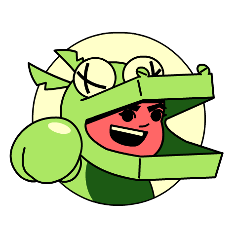

Super Spy Raccoon


A solo developer inspired by yesterday's games.
My name is Enzo Brown and I’m a solo-developer that makes Yesterday’s Games, Today. I’ve made art all my life and I’ve made (or at least tried to make) games since the flash days. It wasn’t until 2023 that I decided to give game-development a real shot. There’s something about older titles that really draws me in and it is my goal to try and capture that magic in my projects.